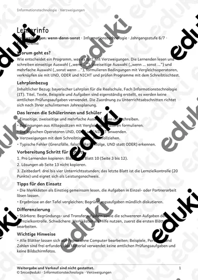
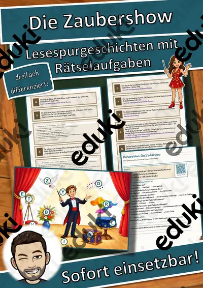
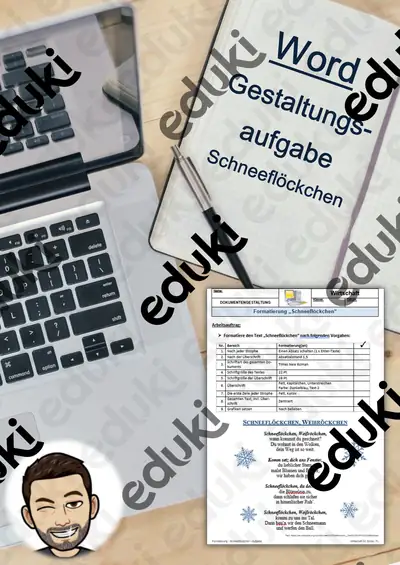
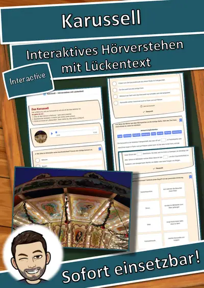

Lesespur: Bedingungen und Schleifen: Wenn-dann und Wiederhole – Lesespurgeschichte mit Rätseln (Klasse 6)
Bedingungen und Schleifen – Wenn-dann und Wiederhole – Lesespurgeschichte Informatik (Klasse 6)Schick deine Klasse auf eine Lesespur hinter die Kulissen eines Freizeitparks! Lina und Jonte aus der 6b gewinnen eine Technik-Führung im Freizeitpark Sonnenhügel. Die Parktechnikerin Frau Demir zeigt ihnen, wie Programme die Fahrgeschäfte steuern: Am Eingangsdrehkreuz prüft ein Computer eine Bedingung, das Karussell fährt mit einer Zählschleife, und die Ampel an der Wasserrutsche arbeitet mit wenn-dann-sonst. Am Popcornstand lernen die beiden die Schleife mit Abbruchbedingung kennen, an der Achterbahn zwei Bedingungen mit UND, im Autoscooter eine Bedingung in einer Schleife und an der Wellenschaukel eine verschachtelte Schleife. In der Steuerzentrale entdecken sie den Ablaufplan und den Not-Aus-Knopf, in der Werkstatt gehen sie auf Fehlersuche, und zum Schluss wartet die Lichtshow auf der Parkbühne. Linas Plüsch-Pinguin Pippo ist immer dabei. Am Ende jedes Abschnitts verrät ein Hinweis den nächsten Ort auf dem Plan – nur wer genau liest, findet den Weg und sammelt alle geheimen Buchstaben zum Lösungswort.
Die perfekte Lesespur für INFORMATIK in der 6. Klasse – ideal für den Einstieg ins Programmieren, für Projekttage, Vertretungsstunden und fächerübergreifend mit Deutsch und Mathematik: Sie verbindet sinnentnehmendes Lesen mit den Grundstrukturen von Programmen und kleinen Sachrechnungen. Das Material ist SOFORT EINSETZBAR und in DREI DIFFERENZIERUNGSSTUFEN (leicht ★ / mittel ★★ / schwer ★★★) angelegt.WICHTIG: Das komplette Material ist sowohl in FARBE als auch in SCHWARZ-WEISS enthalten – ideal zum Sparen von Druckkosten.DAS IST ENTHALTEN
- Lesespurgeschichte in 3 Niveaus (leicht, mittel, schwer)
- farbiger Plan vom Freizeitpark als Suchkarte
- Hörverstehen mit QR-Code zur MP3 (selbstständiges Hören mit Kopfhörern)
- vier Aufträge auf dem Weg: eine Zuordnung, ein Quiz, eine Rechenaufgabe und ein Steckbrief
- Rätselseite (Wörter-Suchsel + Fragen zu Bedingungen und Schleifen)
- Ausmalbild zum Thema (Karussell, Popcornwagen und Plüsch-Pinguin)
- ausführliches Lösungsblatt für die Lehrkraft
- alles zusätzlich als komplette Schwarz-Weiß-VarianteSO GEHT DIE LESESPURDie Kinder lesen ab START, finden im Text den nächsten Ort, suchen ihn auf dem Plan und lesen bei dieser Station weiter. An jeder richtigen Station gibt es einen Buchstaben. Eingeplante Sackgassen (Brunnen, Parkbank, Luftballonstand, Kiosk) sind keine Stationen und dienen der Selbstkontrolle. Am Ende werden die gesammelten Buchstaben umgestellt und ergeben ein geheimes Lösungswort. (Die Lösungen sind selbstverständlich nur im Lösungsblatt für die Lehrkraft enthalten.)INHALTLICHER SCHWERPUNKTBedingung als wahr/falsch-Aussage, Sensoren, Zählschleife, Verzweigung mit wenn-dann-sonst, Schleife mit Abbruchbedingung, Verknüpfung mit UND, Bedingung innerhalb einer Schleife, verschachtelte Schleife, Ablaufplan, Endlosschleife und Not-Aus, Fehler (Bug) finden und Programme testen.ABGEDECKTER LEHRPLAN (Klasse 6, Informatik)
- Informatik (LehrplanPLUS Bayern, Mittelschule 5/6) – Programmieren: algorithmische Grundstrukturen Wiederholung und Verzweigung erkennen, beschreiben und anwenden; Abläufe testen und Fehler finden.
- Mathematik – Jahrgangsstufe 6: Multiplizieren, Terme und Sachrechnen.
- Deutsch – Lesen: Sachtexte sinnentnehmend lesen; Zuhören: einem Hörtext folgen (Hörverstehen mit MP3).
- Medienbildung: Steuerung technischer Geräte durch Programme im Alltag verstehen.
Geeignet für Freiarbeit, Stationenlernen, Vertretungsstunden, Wochenplan, Projekttage und als Einstieg in die Blockprogrammierung. Klassenstufe 6.
Ähnliche Materialien

Verzweigungen: wenn-dann-sonst – Arbeitsheft mit Lösungen (IT 6/7, Realschule Bayern)

Schleifen und Operatoren – Arbeitsheft mit Lösungen (IT 6/7, Realschule Bayern)

Lesespur: Muster fortsetzen: Regeln finden wie ein Computer – Lesespurgeschichte mit Rätseln (Klasse 1)

Lesespur: Wenn dir kalt wird – Lesespurgeschichte mit Rätseln (Klasse 3)

Echo Lückentext mit Wortspeicher Hörverstehen und Suchsel

Lesespur: Die Zaubershow: Hinter den Kulissen der Magie – Lesespurgeschichte mit Rätseln (Klasse 5)

EDV/Informatik/Word: Word Formatierung - Schneeflöckchen
